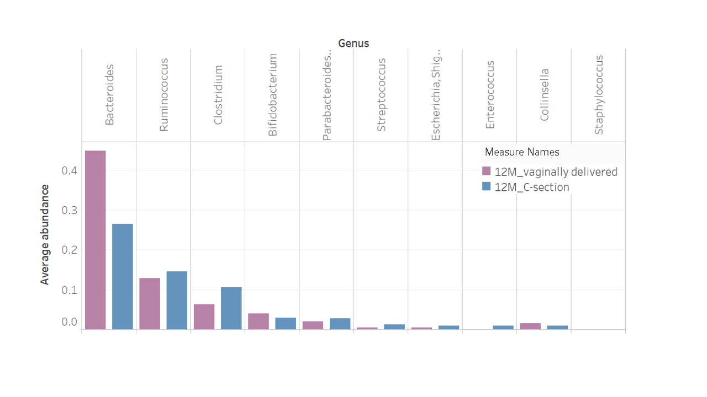
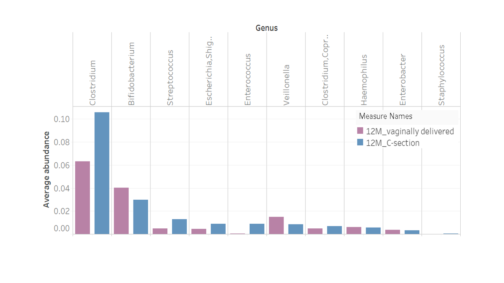
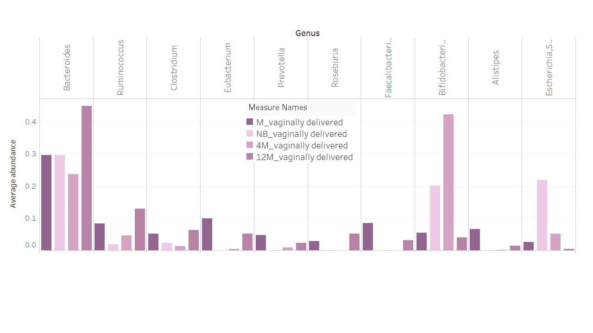
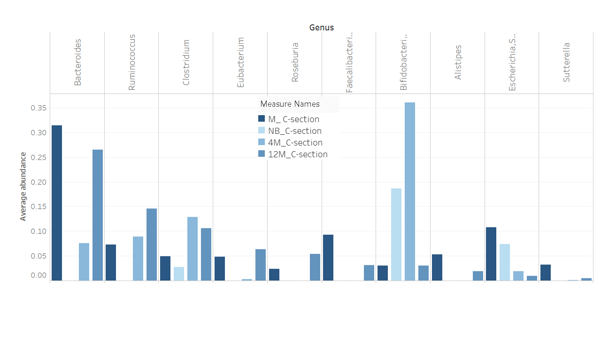
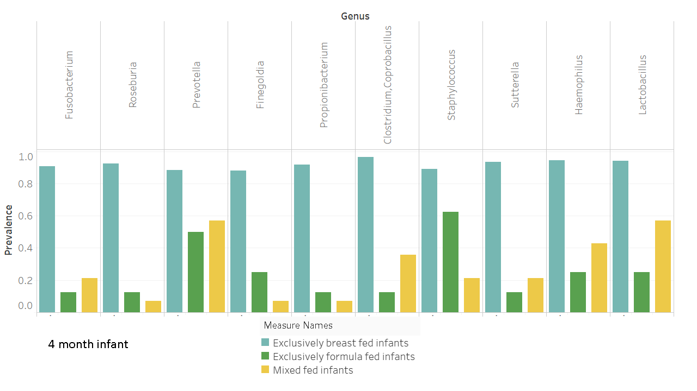

Mother & Infant Healthcare
Team Introduction
Topic Introduction
Historical Data
Graphs
Maternal & Infant Characteristics
Graphs
Machine Learning
Microbiome Data
Graphs
Machine Learning
Conclusions
References Used
Microbiome Graphs
Microbiome 1: Comparing the microbiata of vaginally delivered infants versus C-section

×
Microbiome 2: Comparing the microbiata of vaginally delivered infants versus C-section

×
Microbiome 3: Comparing the microbiata at intervals for vaginally delivered infants

×
Microbiome 4: Comparing the microbiata at intervals for C-section delivered infants

×
Microbiome 5: Comparing the microbiata of Breast Fed versus Formula fed versus Mixed Fed Infants

×